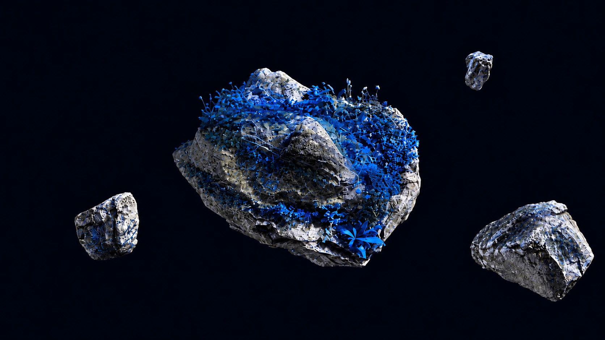

A Breakthrough In Environmental Measurement.
Built for Commercial Use.
REAL-TIME,
BLOCKCHAIN-BACKED
CARBON INTELLIGENCE
Know your impact—precisely.End-to-end environmental intelligence powered
by science, blockchain, and transparent data you
can trust.
Built by Rushikesh Garad · © 2026